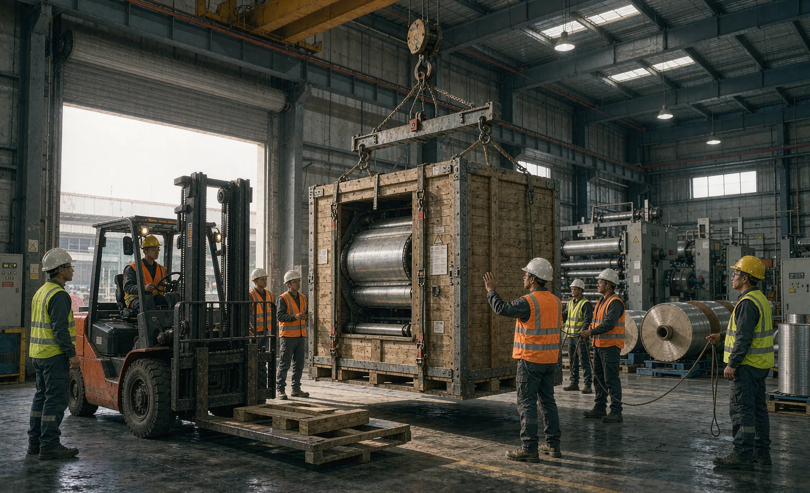
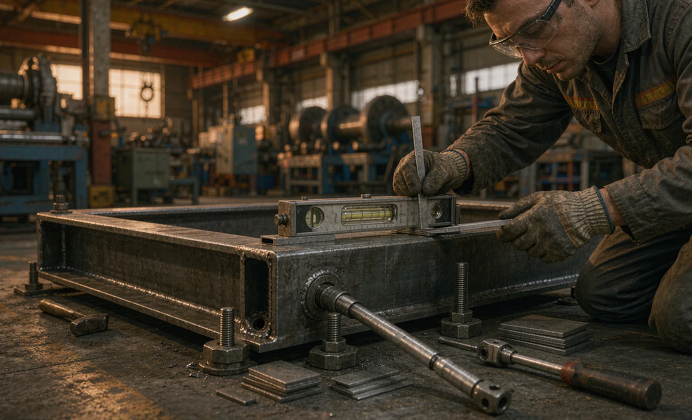

Published September 29, 2026 | By HDPTH Technical Editorial Team

A slitter rewinder arrives as crates and skidded sections weighing anywhere from a few to many tons. The site preparation checklist covers foundations, power and air—but utilities are only half of readiness. The other half is physical: how the machine gets off the truck, through the doors, across the floor, and onto its anchors level enough to run at specification. Site preparation gets the building ready; rigging is the discipline that actually moves and places the machine without hurting people, floors or precision components.
Start with the machine data
Before any transport is booked, the rigging contractor needs the supplier's weight and dimension package: gross and net weight per crate and per section, packed and unpacked dimensions, the center-of-gravity drawing, approved lifting and jacking points, and floor-loading figures for the machine in place. This exists—ask for it with the order documents. Rigging planned around guessed weights is how anchors bend, frames twist and idler rolls go out of alignment. If your machine is a relocation or retrofit, request the same package from the original manufacturer before the machine is disconnected.
The pre-move survey
Walk the route before the delivery date and record it: door widths and heights, ramp angles, dock capacity, floor joints, pits, drains, ceiling obstructions, and the turning radii corners allow. Photograph the route and share it with the rigging contractor. Two checks deserve special attention. First, floor loading: the machine's point loads at jacking points and skate or roller positions during the move are often higher than its loads in final position, so confirm capacity along the whole route, not just at the foundation. Second, access for equipment: a mobile crane needs standing room and a level pad; a forklift needs rated capacity with the load center of the actual crates, not a nameplate guess. The project schedule should include this survey as a milestone with a date, because re-planning after the truck arrives is expensive.
Unloading and moving methods
There is no single right method—there is a right match between load and site.
- Forklift: fastest where floors are level, doors are wide and crate geometry allows. Verify capacity against actual crate weight and load center, and use certified attachments.
- Mobile crane: handles heavy sections and lifts over docks or obstacles. Confirm crane pad ground conditions and outrigger loads, and keep the lift plan on file.
- Skates and rollers with jacks: the standard method for final in-plant moves of heavy sections. Lift at approved jacking points, protect the floor, and move slowly along the surveyed route.
- Air-film transporters: useful on smooth sealed floors where precise positioning matters, but they need an airtight surface and compressed air.
- Overhead crane: if the hall has one, confirm its rated capacity and sling points against the supplier's lifting drawing.
Whatever the method, the lifting points are non-negotiable. Frames carry machined surfaces, rolls and guide sensors; lifting from the wrong lug or tubing can distort alignment that took the factory hours to set.
Positioning, anchoring and leveling
Once a section is on its foundation pads, the precision work begins. Position each section to the layout drawing, then anchor, shim and level to the supplier's tolerances—typically expressed in millimeters per meter on the frame, with parallelism values between sections checked on the rolls. Do not shortcut shimming: machine level feeds directly into web tracking, tension uniformity and slit quality, and a machine that "looks level" by eye is not level by the tolerance. Finish with a documented level-and-alignment record; it becomes the reference for the commissioning checks and for any future relocation claim.
Anchor systems vary by machine and foundation type—chemical anchors into a new foundation, or vibration-damping mounts where the building cannot accept drilling. Confirm the anchoring design with the supplier during the order phase, not during installation week, and remember that safety guarding, light curtains and e-stop positions are set once the machine is finally placed.
Need a rigging and installation plan for your machine?
HDPTH supplies weight data, lifting drawings and day-by-day installation supervision. Send your site details and we will scope the moving plan with you.
Discuss Your InstallationWho does what on installation day
| Task | Rigging Contractor | Supplier Engineer | Buyer |
|---|---|---|---|
| Lift plan and equipment | Owns | Provides lifting data | Approves site access |
| Unloading from truck | Executes | Supervises lifting points | Provides ramp and labor |
| In-plant transport | Executes | Advises on handling | Clears route and floor |
| Positioning and alignment | Assists | Owns tolerances | Confirms layout |
| Anchoring and shimming | Executes | Specifies and verifies | Provides anchors per drawing |
| Level and alignment record | — | Documents | Signs and archives |
| Safety during works | Owns crew safety | Owns machine safety rules | Owns site safety coordination |
The split of responsibilities should be written into the purchase contract next to the shipping terms, so that on the day nobody is negotiating about who brings the jacks.
Practical tips from real installations
- Send the packing list and lifting drawing to the rigger before transport is booked.
- Walk and photograph the route; measure every door, not just the main gate.
- Confirm forklift and crane capacity against actual crate weights and load centers.
- Reserve buffer days: weather, customs and crane availability all slip.
- Keep original transport brackets and hardware—commissioning may ask for some back.
- Document the level and alignment record and store it with the machine file.
- Brief everyone on one point of contact for stop-work decisions.
Common rigging mistakes
- Guessing weights: undersized forklifts and cranes are dangerous and stall the whole day.
- Lifting from non-approved points: a saved minute can cost a re-aligned frame and a delayed guarantee test.
- Ignoring floor loading along the route: the failure point is usually a floor joint or pit cover mid-route, not the foundation.
- Leveling by eye: tolerances exist because slit quality depends on them.
- No single coordinator: riggers, electricians and supplier engineers moving without one dispatcher create the accidents.
Buyer FAQ
What machine data does a rigger need before moving a slitter rewinder?
The rigger needs the gross and net weight of each crate and section, overall and packed dimensions, the center-of-gravity drawing, lifting and jacking points, and the floor-loading values for the machine in place. Suppliers provide this in the packing list and general arrangement drawings, and it should reach the rigging contractor before transport is booked, not when the truck is on the ramp.
Should a forklift or a crane be used to unload a slitter rewinder?
It depends on weight, package geometry and site access. Forklifts work when the ground is level, the capacity is adequate and crates are forkliftable; mobile cranes handle heavier sections and lift over dock edges or obstacles. The decisive input is the supplier's lifting-point drawing—using the wrong points on a machine frame can twist rolls and guides and cost more than the crane hour saved.
How precisely does a slitter rewinder need to be leveled?
Precision matters more than most buyers expect: roll parallelism and machine level directly affect web tracking, tension uniformity and slit quality. Suppliers specify level tolerance per meter on the frame and alignment values between sections. Installation should end with a documented level and alignment check, verified again during commissioning.
Who is responsible for rigging on a machinery import project?
Under most Incoterms the buyer arranges and pays for unloading, internal transport and installation at destination, typically through a local rigging contractor. The supplier's engineer supervises positioning, anchoring and alignment and validates the result. The split should be written into the contract together with the site preparation responsibilities.
What floor loading checks are needed before a machine move?
Check the point and distributed loads of the machine, the loads during the move—jacking points, skates and concentrated wheel loads—and the route including pits, drains and floor joints. A structural engineer should confirm floor capacity where documentation is unclear, since a converting machine's local loads can exceed what a general warehouse floor was designed for.
Sources
- HDPTH: Site preparation checklist
- HDPTH: Commissioning checklist
- HDPTH: Lead time and project schedule buyer guide
- HDPTH: Incoterms and shipping buyer guide
- ICC: Incoterms rules

Plan the moving day like a project
Request the weight package, lifting drawings and an installation supervision plan for your HDPTH machine before the truck is booked.
Request Installation Support